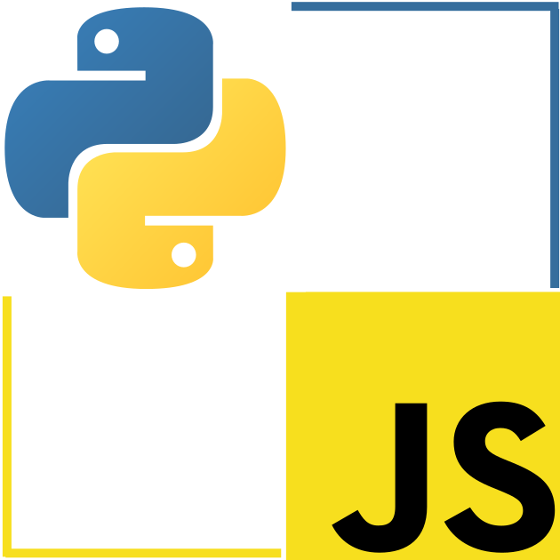
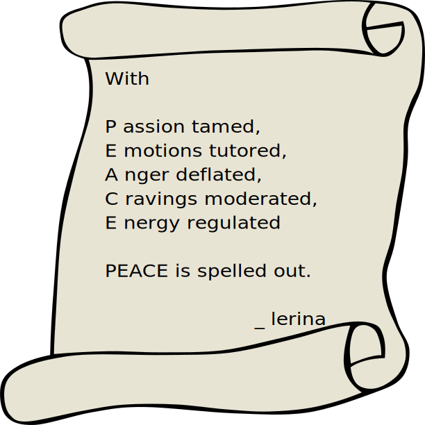
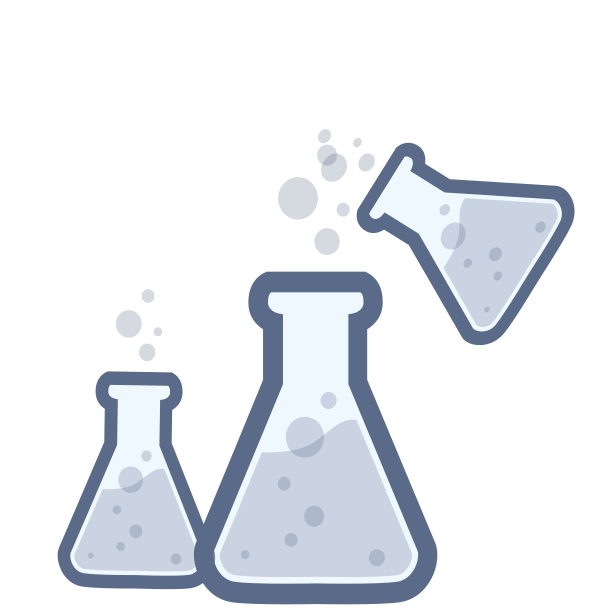

Solution Developer & Software Writer
Rust
Rust makes programming fun again. The learning curve is a blessing. It make you pay attention not only to what you do but why you do it that way. If computers are “Bicycles for the Mind (Steve Jobs)”
then surely Rust must be the “Chain gear” that propels your realizations.
Boost JavaScript & Python

If you’ve been coding in Python or Javascript for a while, chances are your have encountered situations where speed and efficiency became an issue. Speeding things with C or C++ may have seamed a good solution but it opened a whole other can of problems. Suddenly you may have found yourself spending time being a internal memory troubleshooter and a python or javascript developer.
Rust is the secret weapon that will bring back sanity to your projects. With Rust you can safely Boost Python or Speed-up Javascript-NodeJs
Let’s do that together!
Rust and Webassembly

Code once, run anywhere! … Again! … and for Real!
Whether you want to build an entire application for the browser or even out of the borwser but in compiled to webassembly or you want to build a part of an application in webassembly, Rust code can be compile into WebAssembly (wasm) and the rust eco-sysment makes it easy to do so.
Selected Writings
Non-Tech Texts, Ideas and Concept

If you enjoy word play and constrained metaphors and prose posing as poems, there are more in this section
Bearing in mind that:
“Ideas are like, not the work!”
_ Cameron Howe : halt and catch fire, s4e9
When you are done with the art and fun of word play and concept twisting, or if you wish to view technical or IT oriented text, you may wish to proceed to the next section Tech Contepts Lab .
Tech Contepts Lab

To really understand something, one first learn the rules and become good at it.
To master something, one needs to experiment with the constraints, twist, bend and sometimes break the rules.
The Tech Concept Lab is such a place.
Going against the general concensus and status quo on select Computer Science, Software Enginering, Software Development habits, processes and cult like practices.
TDD, BDD, the noise has reached cult-like levels. So here is my contribution, when you code, I urge you to stand by the SECT:
Story Driven RequirementsExample Driven DesignCode Driven DevelopmentTest Driven Delivery
And by all mean, push for 100% test coverage, of those portions of code that matter.
Not every progress is about rebelion. Its less about seeking controversy and more about optimizing for efficiency.
“From spaghetti code to ravioli code:
self-contained modules with value inside”
__ lerina
Here is how I earn my DOUGH. Its all about PASTA.
Practice
Adapt (for your constraints)
Study (senior’s code)
Tweek (optimize)
Abuse (push it to the limit)
If you enjoy playful mnemonics and applicable bullet list in the context of Software Development, there’s more in this section
Code as a Narrative
Code listings and Tracing code used to be the only way to learn programming back in the days. It left me with a longing for something similar in the durrent wonderful of git and other publically browsable code repositories. But short of painstakinly going from commit to comit until the Head, how can we get the same sense of code discovery?
I’ve been playing with the concept of code as a narrative recently. The notion is not new. It has had various definition and partial implementation.
From Literate programming, literateprogramming.com, Donald Knuth - Literate programming - youTube
to Pseudocode Programming Process
to Code That Reads Like a Story
The particular version emerging from this Tech Lab is Code as a Narrative. I find it very useful as a teaching tool. But I’m not fixed yet as its value in a professional project. Thats why is still in the Tech Lab Section
If you are eager for tutorial, code-alongs, and code walkthrough head-on to the next section.
Code Walkthrough and Tutorials

Practice your SPEED. Its not what you think. You don’t have to become a keyboard touchtyping wizard. SPEED are a set of Sorted Programming Examples and Exercise Drills.
the Rust Programming Game ⬆
ETA: Spring Break 2020
Its a Story, a RPG Narrative
Its a Guide, a Rust programming Tutorial
Its a Fun, a Live Coding Role Playing Game